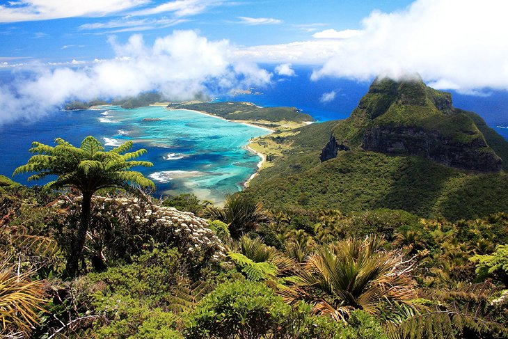
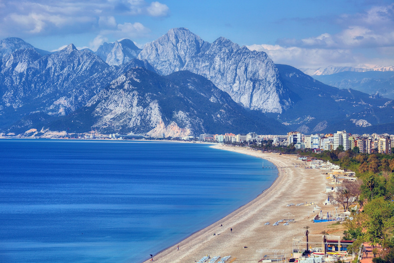
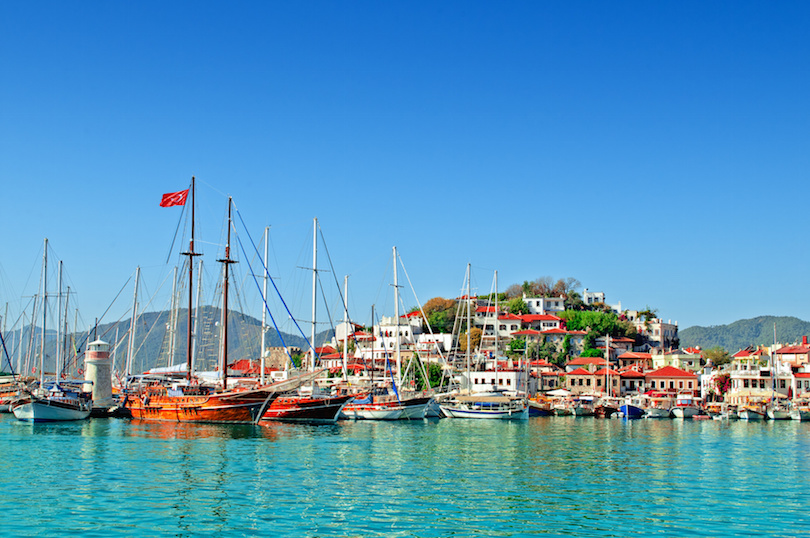
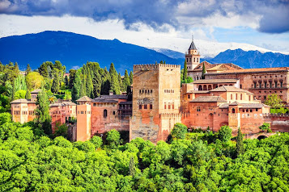
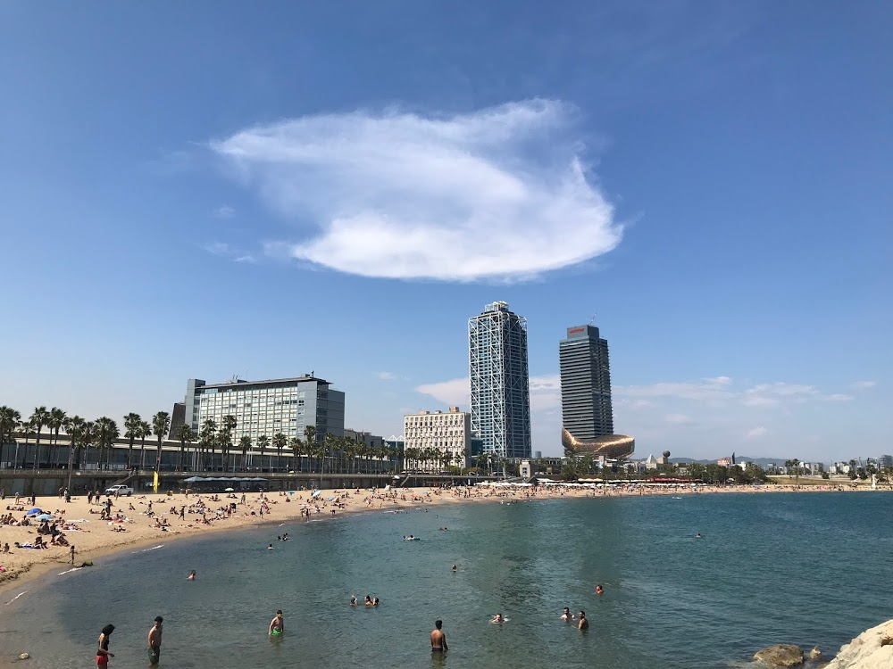
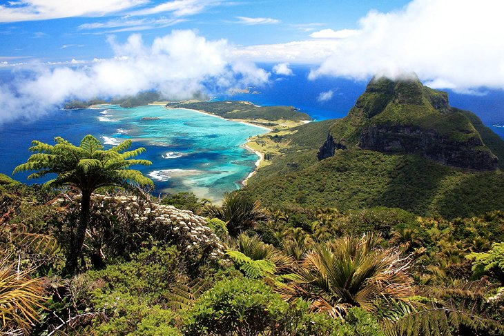
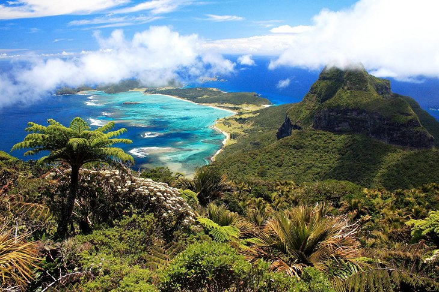
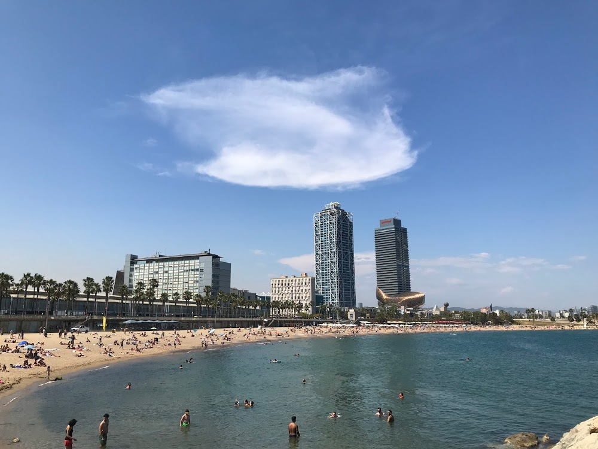
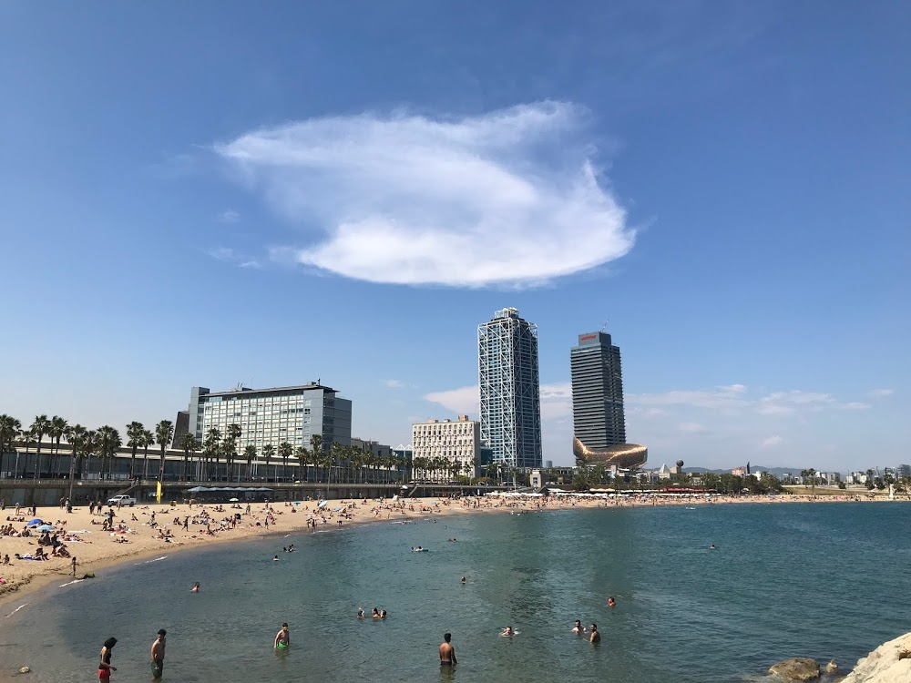

Australia, officially the Commonwealth of Australia, is a sovereign country comprising the mainland of the Australian continent, the island of Tasmania, and numerous smaller islands. It is the largest country in Oceania and the world's sixth-largest country by total area. The neighbouring countries are Papua New Guinea, Indonesia, and East Timor to the north; the Solomon Islands and Vanuatu to the north-east; and New Zealand to the south-east. The population of 25 million is highly urbanised and heavily concentrated on the eastern seaboard. Australia's capital is Canberra, and its largest city is Sydney.

Turkey.
Turkey is a nation straddling eastern Europe and western Asia with cultural connections to ancient Greek, Persian, Roman, Byzantine and Ottoman empires. Cosmopolitan Istanbul, on the Bosphorus Strait, is home to the iconic Hagia Sophia, with its soaring dome and Christian mosaics, the massive 17th-century Blue Mosque and the circa-1460 Topkapı Palace, former home of sultans. Ankara is Turkey’s modern capital.
Capital: Ankara Trending
Dialing code: +90
Currency: Turkish lira
President: Recep Tayyip Erdoğan
Official language: Turkish


Spain
Spain, a country on Europe’s Iberian Peninsula, includes 17 autonomous regions with diverse geography and cultures. Capital city Madrid is home to the Royal Palace and Prado museum, housing works by European masters. Segovia has a medieval castle (the Alcázar) and an intact Roman aqueduct. Catalonia’s capital, Barcelona, is defined by Antoni Gaudí’s whimsical modernist landmarks like the Sagrada Família church.



 


 
